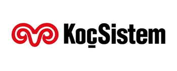

profile
Murat Iyidost
Computer ScientistIT Customer Field Engineer
- Creating and maintaining custom Windows 7 and Windows 10 images which contains Office and applications needed by the company.
- Setup & maintain Windows Deployment Toolkit and Windows Deployment Services server to image machines over the network via PXE boot
- Planning, implementation, and management of design, operation, configuration, repairing, optimization and troubleshooting all kinds of Servers, Laptops, Computers, Printers, Scanners, ATM and electronic devices
- Install various types of network infrastructure equipment in the Rack (i.e.: switches, routers, modems, wireless access points).
- Experience troubleshooting integrated and interdependent computer systems
- Experience maintaining zebra thermal printers, troubleshooting thin clients, computers, scanners, and portable handheld terminals
- Liaise with the Help Desk on escalated technical issues.
- Managed all reporting and administrative work
- Server, PC, Printer, ATM installation, troubleshooting, maintenance, and break-fix support
- Support Hardware and Software asset management, tracking and auditing for devices not connected to the network and according to Maersk Line global processes
- Provide VIP support to selective customers as per SLA and agreement
- Manage and complete incident and move, add, change (MAC) requests and update ticketing system accordingly
- Create, delete and maintain user system accounts and passwords in Active Directory, corporate email system, phone system, and related applications and services
- Ensure that Group IT Security standard processes are followed for services provided
Certificates & Trainnings
MCSE | A+ | C++ | MS SQL | HTML 5 | CSS
resume
Resume – Personal Info
MURAT IYIDOST
Experience
-
Store Manager Mar 2020 - Current
7-Eleven, Vancouver, BC
- Oversee daily store operations, supervise employees and manage inventory
- Ensure sufficient staffing levels to meet the needs of the guests
- Develop successful sales plans to grow profitability
- Recruit, train, develop and motivate the employees
- Demonstrate leadership and promote a teamwork oriented environment setting high standards and modeling behavior for optimum guest service
- Implement new product lines and create strategies to introduce and promote them to the guests
-
Inventory Manager May 2019 – Mar 2020
WIS International, Vancouver, BC
- Responsible for planning, installing, programming, troubleshooting inventory Access points and all Wi-Fi devices
- Managing all system and inventory crew members during counting
- Establish and maintain effective business relationships with internal and external customers at various levels
- Recommend or implement actions to address performance metrics and achieve targets for profitability, productivity and efficiency.
- Implement and promote a safe working environment.
- Have the flexibility to work a varied schedule and travel to our customers’ locations.
-
Store Manager May 2019 – Mar 2020
A&W Vancouver, BC
- Planned, organized and directed the operation of restaurant
- Oversaw all aspects of restaurant profitability including inventory, labour and waste control
- Handled ordering, invoice processing, scheduling and time management
- Able to handle and resolve potential guest concern with professionalism and care
- Maintained and demonstrated professional work ethics, moral integrity and positive attitude
-
IT Lab Assistant Jan 2016 – Dec 2017
Vancouver Island University IT Help Desk, Nanaimo, BC
- Instructed students and faculty on how to operate various electronic devices and software as well as informed them of network status, available software, and VPN access
- Repaired and upgraded desktop computers, laptops, printers, e-classrooms, and collaboration tools
- Diagnosed technical issues and promptly implemented fixes to student-owned and university devices
- Installed certificates on Windows, Mac, and Linux operating systems in accordance with university's IT security policy
- Improved network security by installing anti-malware tools and configuring TCP/IP settings in accordance with the university's IT protocol
-
IT Field Engineer May 2012 – Apr 2014
 NCR, Istanbul, Turkey
NCR, Istanbul, Turkey- Responsible for planning, installing, programming, troubleshooting inventory Access points and all Wi-Fi devices
- Managing all system and inventory crew members during counting
- Establish and maintain effective business relationships with internal and external customers at various levels
- Recommend or implement actions to address performance metrics and achieve targets for profitability, productivity and efficiency
- Implement and promote a safe working environment
- Have the flexibility to work a varied schedule and travel to our customers’ locations
-
IT Field Engineer Jun 1997 – Dec 2012
 Kocsistem, Istanbul, Turkey
- Manages and maintains documentation pertaining to servers, systems and network environments. Works to improve and develop new processes
- Creating and maintaining custom Windows images which contains Office and applications needed by the company
- Setup & maintain Windows Deployment Toolkit and Windows Deployment Services server to image machines over the network via PXE boot
- Provides technical assistance to end users on the Local Area Network and remote users connected to the TPNM Network
- Assists the Director of Network & Infrastructure in maintaining basic network operation and provides backup as necessary
- Use tools and applications for monitoring desktop performance and provide performance statistics and reports
- Provide information to Team Members on established policies, procedures, and services provided
- Assist in maintenance and operation of our network and Mac management infrastructure
- Install various types of network infrastructure equipment in the Rack (i.e.: switches, routers, modems, wireless access points).
- Troubleshoot, repair and/or replace hardware and network cable and connectivity issues.
-
Desktop Support Jun 1993– May 1997
 IBM, Istanbul, Turkey
IBM, Istanbul, Turkey- Troubleshoot, repair, installing, and/or replace hardware and network cable and connectivity issues
Education
-
Computer Science 2015 - 2018
Vancouver Island University, Nanaimo, BC
-
Electronic - Coop 1992 - 1995
 Universy of Trakya, Edirne, Turkey
Universy of Trakya, Edirne, Turkey
Awards
-
Best IT Field Engineer 2007 - 2008
Kocsistem
Yapi Kredi Bank Branches - Servers and Computers Windows 7 Deployment project
-
Best IT Specialist 1996 - 1997
IBM Turk
Pamukbank Branches Project
Download my resume
Support & Maintanance Experience
Windows Deployment
95%
Windows Deployment Services Server
90%
Active Directory
75%
Windows Server 2012
65%
Programming Experience
GIT
85%
MS SQL
80%
C++
70%
C#
65%
Bash
60%
Web Design skills
HTML5
95%
CSS
85%
Javascript
70%
PHP
40%
Personal skills
Creative
95%
Leadership
95%
Determined
90%
Versatile
85%
Hobbies and interests
Biking
100%
Reading
95%
Soocer
95%
travel
90%
project
IT Projects
MURAT IYIDOST
IT Projects
-
Inventory Manager May 2019 – Mar 2020
WIS International, Vancouver, BC
- Scanner Instruction Programming 2019
- Scanner Demo Programming 2019
-
IT Lab Assistant Jan 2016 – Dec 2017
Vancouver Island University IT Help Desk, Nanaimo, BC
- Installed certificates on Windows, Mac, and Linux operating systems in accordance with university's IT security policy 2017
- Improved network security by installing anti-malware tools and configuring TCP/IP settings in accordance with the university's IT protocol project 2017
- University labs Computers Cable Management Project 2017
- University Web page frequent questions preparetion Project 2016
-
IT Field Engineer May 2012 – Apr 2014
NCR, Istanbul, Turkey- Yapi Kredi Bank ATM replacement and installation of WINDOWS project
- Ziraat Bank ATM replacement and installation of WINDOWS project project
- Garanti Bank ATM replacement and installation of WINDOWS project project
-
IT Field Engineer Jun 1997 – Dec 2012
Kocsistem, Istanbul, Turkey
- Yapi Kredi Bank Branches - Server and Computer installation Windows 7 Deployment project 2011
- Ziraat Bank Branches - Server and Computer installation project 2011
- HSBC Bank Branches - Server installation project 2010
- Yapi Kredi Bank Advocats Department server and computer Windows 7 Deployment project 2009
- Yapi Kredi Bank Leasing Department server and computer Windows 7 Deployment roject 2009
- Yapi Kredi Bank Branches - Server and Computer installation project 2008
- Ford Otokoc Server and Computer installation Windows 7 Deployment project 2008
- Fiat Birmot Server and Computer installation Windows 7 Deployment project 2008
- Yapi Kredi Bank Branches - Server and Computer installation project 1999
-
Desktop Support Jun 1993– May 1997
IBM, Istanbul, Turkey- Yapi Kredi Bank Branches Siglo Project- IBM Server and Computer replacement and OS2 Operation System installation 1996
- Pamukbank Branches Maintenance Project- IBM Server and Computer replacement and OS2 Operation System installation 1995
contact
- Name : Murat Iyidost
- Mobile : +1 (778) 269-2199
- Email : muratiyidost@yahoo.com
- Address : Vancouver, BC, Canada